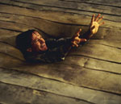

|
|
|
Kinoprogram
|
Moderne jungel-eventyr  I Robin Williams' nye film får komiekeren lekt seg så busta står. Det smånifse brettspillet "Jumani" sørger for sprelsk underholdning og nifse scener. Artig for store barn og barnlige voksne, mener Aftenpostens filmanmelder.
FIKS FILM: Jumani har tatt i bruk avansert teknologi for billedbehandling. Her får Robin Willams kjørt seg. |
|
[Innhold] [Info] [Til Aftenposten hjemmeside] [Post] | |